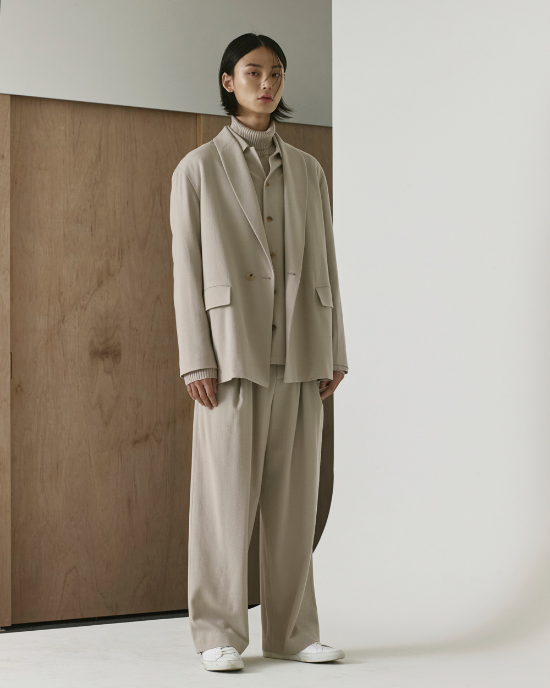

‘YOUTH‘ 는 젊음과 청춘을 나타내는 한 단어입니다. 청춘은 도전을 주저하거나 불확실성을 두려워 하지 않습니다. 오직 청춘만이 고정관념의 벽을 넘을 수 있습니다. ‘ YOUTH＇는 트렌디한 디자인을 답습하거나 대중의 요구에 얽매이고 싶지 않습니다. 그리고 우리는 이러한 도전정신과 열정을 영원히 당신과 함께하고 싶습니다. 누군가의 ‘ YOUTH＇를 위하여.
‘ YOUTH ‘ is the one word that represents the young and fresh. Youth doesn’t hesitate to challenge and fear the uncertainty. Only in youth can break the stereotype and pass over the wall. And that is us. We don’t want to be tied or keep pace with trendy design and public demand. And we want to keep and remember this challenging spirit and passion for ever with you. for someone`s ‘ YOUTH ‘